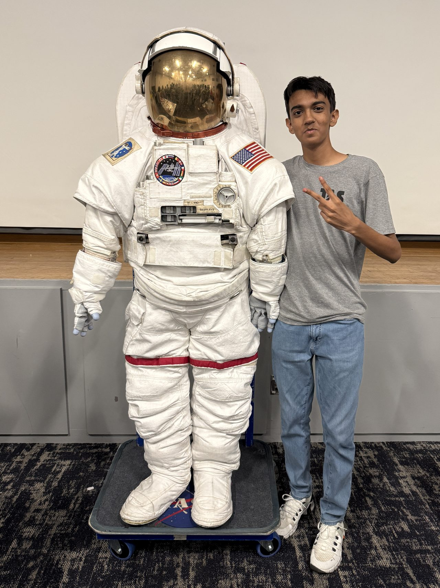

01 / 05
Ten of them
We have run ten Children's Business Fairs, each one landing on a single specific Saturday that everything else is scheduled around.
I like building things that only get one try.
High school senior going into aerospace engineering. Most of what I've made sits right where the code meets the hardware — a rocket flight computer that predicts apogee instead of waiting for it, and a lunar EVA glove modeled for a NASA design review.

The contest scores how close you land to a target altitude. So the rocket has to answer a harder question in flight — not where am I, but where will I stop.
The contest gives you a target altitude and a target flight time, then scores you on how close you get to both with the payload in one piece. I spent sophomore year on the team and ran it as captain junior year — airframe, weight, recovery, and all the electronics.
Most teams let the motor's ejection charge pop the parachute and hope the timing works out. I wanted the rocket to figure it out on its own, so I built a flight computer that reads air pressure, works out how high it's still going to coast, and releases the chute early enough to stop at the target. I wrote the software, soldered the board, and ran it on the bench until I actually trusted it.
Then we flew it over and over, changing one thing at a time so every launch told us something the last one didn't.

With the flight computer Chute at apogee (most teams) ● release fires
Turn that off and the predictor fires at the right altitude but ignores how long the servo takes to move — the rocket keeps climbing through the delay and lands high.
On one flight the chute never came out. The easy thing to assume is that the code missed apogee, and if I'd gone with that I would have burned a week rewriting logic that wasn't broken.
So I checked the electronics first. Power held the whole way up, the sensor readings were clean, and the release command went out exactly when it should have. The software did its job.
The servo just couldn't pull hard enough — the parachute was packed in tight against the retainer and that little servo didn't have the torque to move it. Which makes it a mechanical problem, not a software one. The fix is a stronger servo and less friction in the retainer, not new code.
A Saturn V from ignition through staging and into orbit, then the lunar module it carried the rest of the way. Both models are NASA's, released into the public domain.
The next thing I built has to work somewhere much less forgiving than a field in Texas.
Five months of coursework online, then a week at Johnson Space Center designing a helmet and glove for walking around on the Moon.
I was the design engineer for the glove: the CAD model, and working out what each layer is actually doing. Keep scrolling to pull it apart.
My team's job was a helmet and a set of gloves for walking on the Moon, taken all the way to a Preliminary Design Review with a NASA consultant sitting in on our meetings.
At the end of the week we presented the whole thing to NASA engineers and scientists. Having someone who does this for a living ask why you picked a material is a lot harder than writing it on a poster.
Each layer is there for a different reason, and the annoying part is that everything you add to keep the astronaut safe is one more thing they have to bend a finger through.


Holds the pressure in
Takes the load so the bladder doesn't balloon out
Heating element
Insulation and temperature regulation
The outer shield — lunar dust, abrasion, micrometeoroids
Loading model
I joined in tenth grade and took over fundraising the summer after. It's a nonprofit that teaches business and tech to elementary and middle schoolers — my job as VP of Fundraising is finding the money and the sponsors that keep it running.

Kids come up with a product, build it, price it, then stand at a table and sell it to people they have never met.
Qualified for the state contest freshman year.
My first year competing.
Awarded sophomore year.
Made it to the state conference again.
Awarded junior year.
Four events at the Texas state conference, four placements.